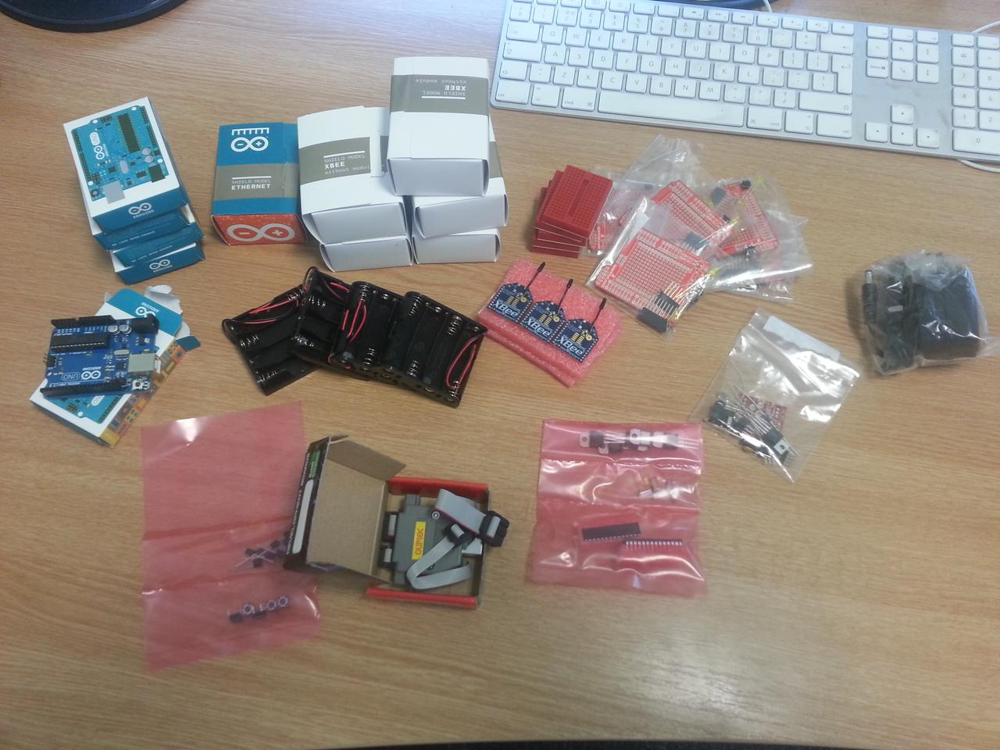

The parts have arrived for the ditch project.
The first tranche of hardware came (in a small box) today:

There are parts here for four sensor packages and a base station. The sensor nodes have an Arduino, a 2mW XBee radio, and a digital temperature sensor. The base station has an XBee and a wired ethernet for connecting up to the internet. There are also some prototyping shields to simplify integration, a wall wart power supply for the base station, and some other goodies to support some other development.
The initial design for a sensor mote puts three temperature sensors together with an Arduino and short-range radio module. The following is the parts list for a single sensor mote:
Citizen Sensing’s first project is to perform environmental monitoring on a small scale with minimally-specification hardware.
We have three sets of goals from this project. Firstly, we want a realistic scientific project that’s simple enough to accomplish over a summer. Secondly, we want to gain some experience with technologies in the field, what works and what doesn’t at this level of sophistication. Finally, we want to develop an initial software platform that can support further experimentation. To deal with these in order:
The science will be very simple. Some areas have climates that vary over very short distances, and these variations can affect the flora and fauna that live there. In particular, areas like depressions and ditches often have different temperature profiles than the surrounding areas, with less variation in temperature, that may suit some species. While this is clear in general, the specifics often aren’t well-understood, so it’s a worthwhile scientific exercise to measure temperature variation around a small area. Specifically, we’ll seek to measure temperature variation around a ditch we have access to, in County Sligo in the West of Ireland.
The technology will be off-the-shelf hardware, using Arduinos for processing and XBee radios for communications. These are extremely cheap commodity items that haven’t really been used for experimental environmental science, and it’s by no means clear that they’re appropriate for building a long-lived, robust sensor network.
The main software challenges include working the hardware and — more significantly — managing the very limited power budget one gets with standard batteries and hardware. In building the software, we’re aiming for a re-usable platform that can be packaged in a form so that the experiment can be reproduced or used as the basis or other experiments by other groups of scientists.
Is this a worthwhile project? From a scientific point of view its clearly questionable, but that’s not the point: this sort of experiment is representative of a wide range of environmental sensing, both citizen and professional, so making it work opens the door to a wider spectrum of investigations without getting bogged-down initially in the details of a scientific challenge when the computing is so new and uncertain.
The blog for the project will let you follow all the gory details.